Archive আর্কাইভ · 40 stories
All Stories
সব গল্প
Curating pop-culture & the underground scene of Bangladesh. Every post we've tagged, by topic.
Music & Rave গান ও রেভ
-
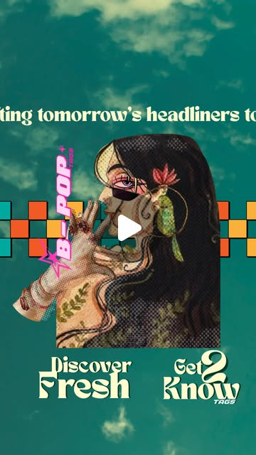
Fiquzic: An Emerging Star on Our Radar ফিকুজিক: আমাদের রাডারে উঠে আসা এক নতুন তারকা -
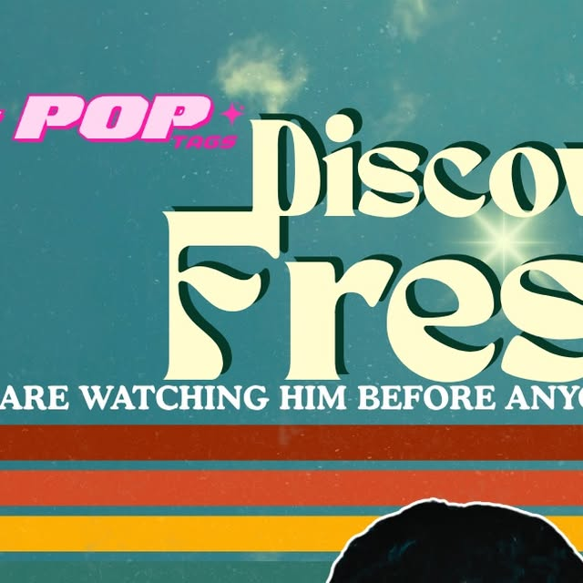
Early Access: Catching Fiquzic Before the Algorithm Does আর্লি অ্যাক্সেস: অ্যালগরিদমের আগেই ফিকুজিককে চিনে নিন -
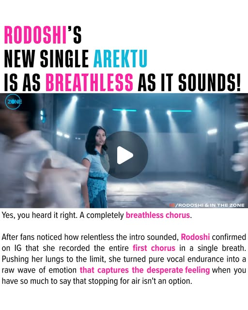
Rodoshi's "Arektu": The Single That Holds Its Breath Rodoshi-র নতুন সিঙ্গেল 'Arektu': এক নিঃশ্বাসে গাওয়া কোরাস -
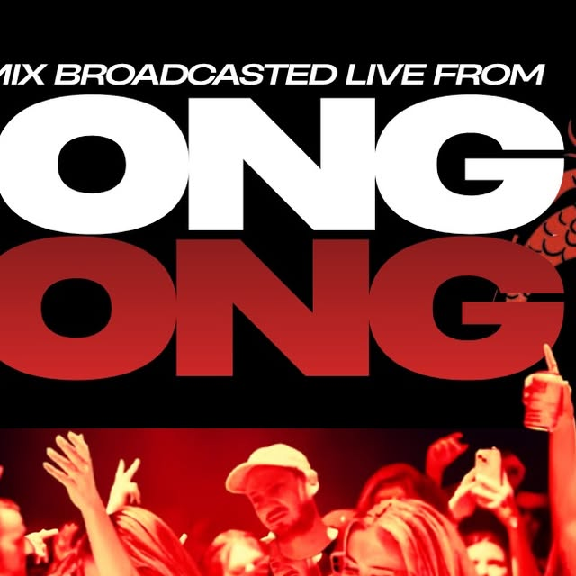
Hong Kong Radio Show Opportunity for Bangladeshi DJs and Producers বাংলাদেশি ডিজে ও প্রডিউসারদের জন্য হংকং রেডিও শোয়ের সুযোগ -
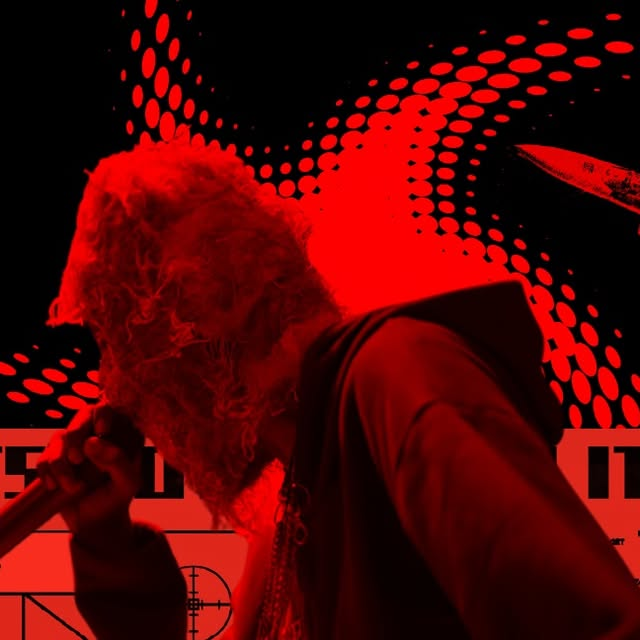
Mass $cott and the Sound of Modern Bangla Trap মাস $কট এবং আধুনিক বাংলা ট্র্যাপের সাউন্ড -
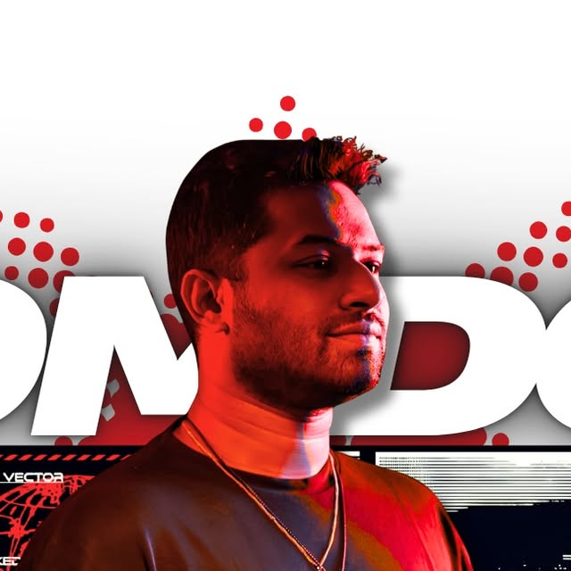
OMDG and the Genesis of Bangladesh's Rave Revolution ওএমডিজি এবং বাংলাদেশের রেভ বিপ্লবের সূচনা -
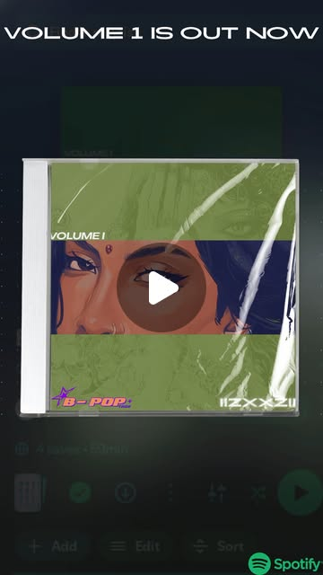
Gatekeeping Was Never an Option: The B-POP x IIZXXZII Playlist গেটকিপিং কখনোই অপশন ছিল না: বি-পপ x IIZXXZII প্লেলিস্ট -
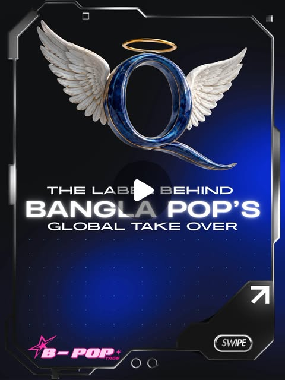
The Takeover of Qinetic Music: The Label Rewriting Bengali Pop কিনেটিক মিউজিকের দখল: যে লেবেল নতুন করে লিখছে বাংলা পপ -
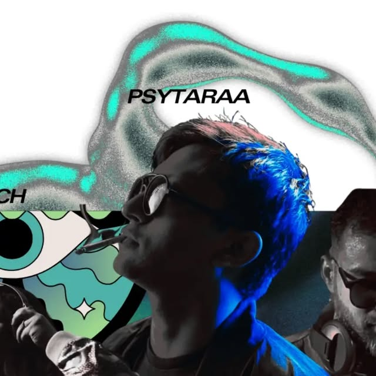
Learn From the Best: Omnigroove Collective DJ Workshop অমনিগ্রুভ কালেক্টিভের ডিজে ওয়ার্কশপ: সেরাদের কাছ থেকে শিখুন -
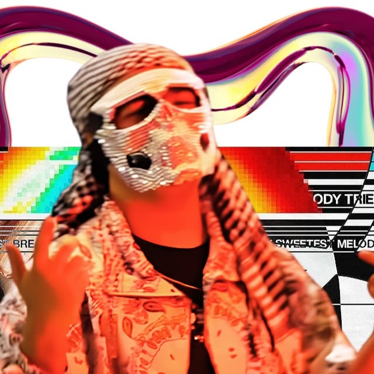
DJ Shimmerie and the Heart of Dhaka's Underground Parties ডিজে শিমেরি: ঢাকার আন্ডারগ্রাউন্ড পার্টির হৃৎস্পন্দন - Special K x Omar Alkilani: The Magic Produced by Arka স্পেশাল কে ও ওমর আলকিলানি: আরকার প্রযোজনায় এক জাদুকরী পারফরম্যান্স
-
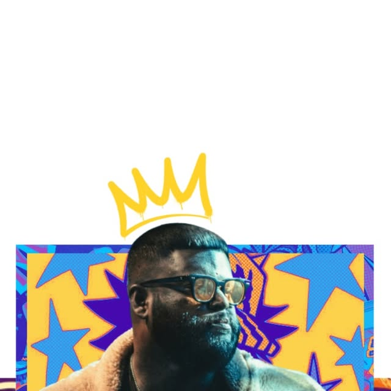
Blackzang: The King Who Redefined Bangladeshi Hip Hop ব্ল্যাকজ্যাং: বাংলাদেশের হিপহপকে নতুন সংজ্ঞা দেওয়া কিং -
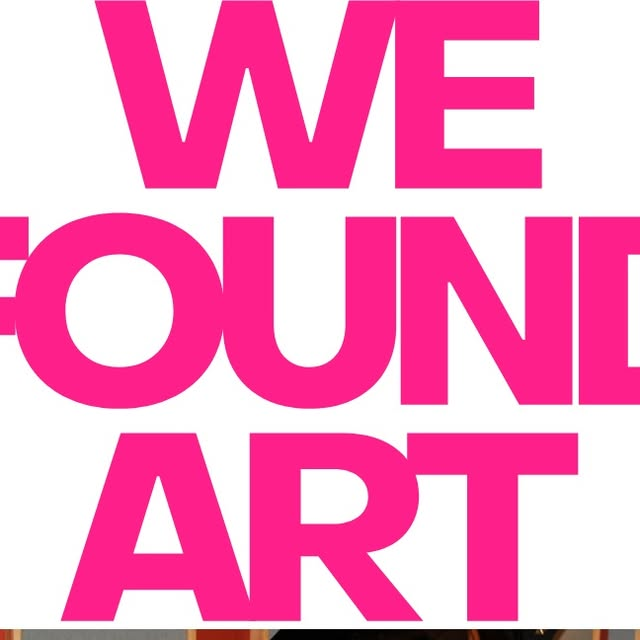
Halfcian of Salted Jus: Bangladesh's Golden Boy on the Global Stage সল্টেড জুস-এর Halfcian: বিশ্বমঞ্চে বাংলাদেশের ‘গোল্ডেন বয়’ -
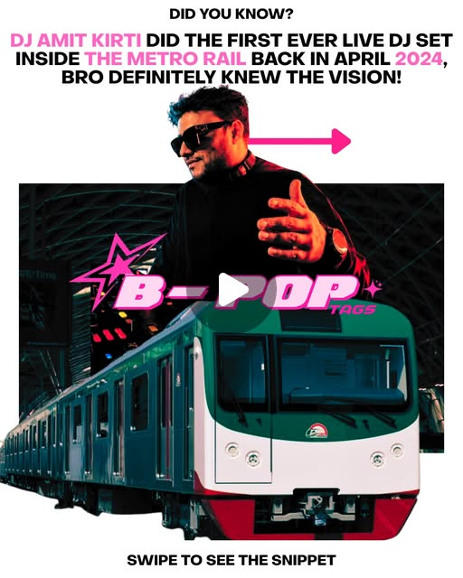
DJ Amit Kirti's DJ Set Inside the Bangladesh Metro Rail মেট্রোরেলের ভেতরে ডিজে অমিত কীর্তির সেট -
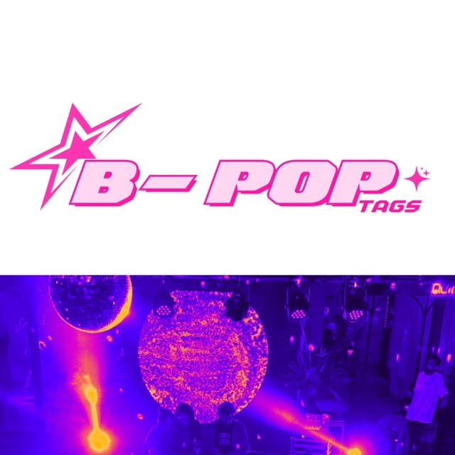
The Electric Rise of Bangladesh's Sound বাংলাদেশের ইলেকট্রিক উত্থান
Art & Fashion শিল্প ও ফ্যাশন
-
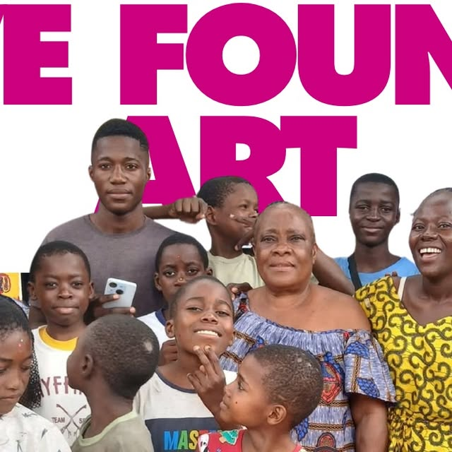
Hridita Anisha: The Artist Building Culture, Not Decorating It হৃদিতা আনিশা: যিনি সংস্কৃতি সাজান না, গড়ে তোলেন -
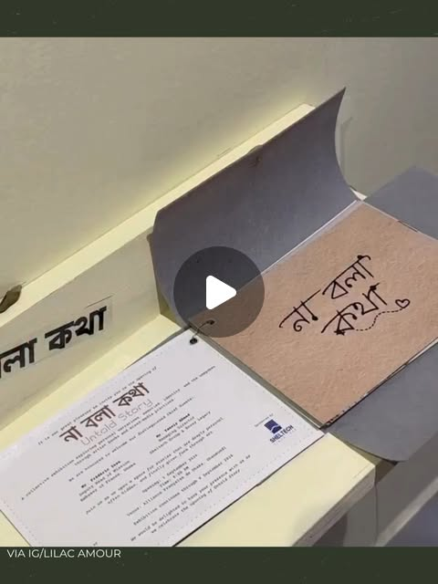
Open to All Art Exhibition at Alliance Française de Dhaka আলিয়ঁস ফ্রঁসেজ দ্য ঢাকায় 'ওপেন টু অল' শিল্প প্রদর্শনী -
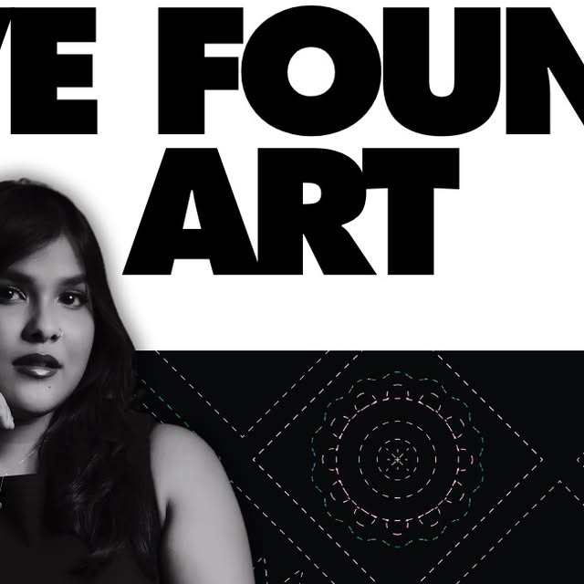
Samaha Subah: Bangladeshi Heritage Setting International Trends সামাহা সুবাহ: নকশিকাঁথার ঐতিহ্যে আন্তর্জাতিক ট্রেন্ড -
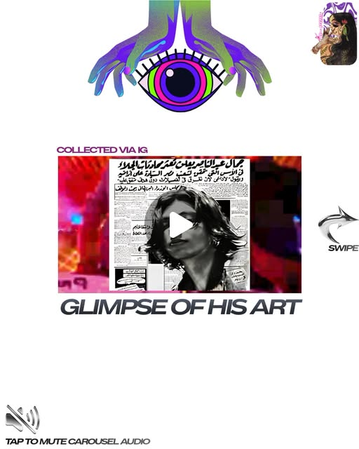
Lunith.Void: Pushing Boundaries in Dhaka's Psychedelic Culture লুনিথ.ভয়েড: ঢাকার সাইকেডেলিক সংস্কৃতির সীমানা ভাঙা শিল্পী -
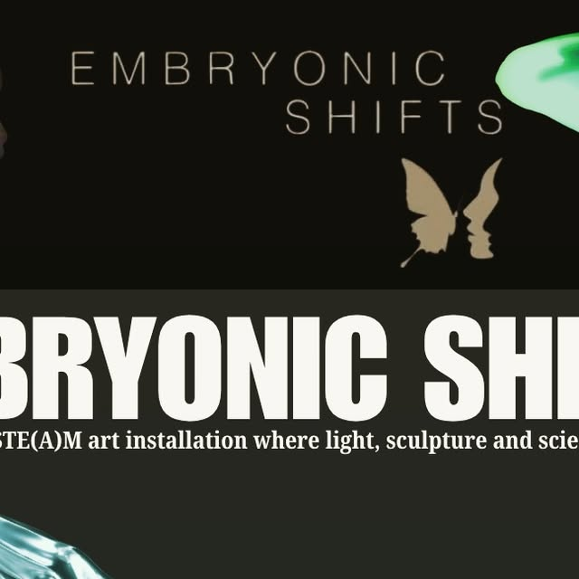
Embryonic Shifts: A Stroboscopic STE(A)M Art Installation এমব্রায়োনিক শিফটস: আলো, ভাস্কর্য আর বিজ্ঞানের স্ট্রোবোস্কোপিক ইনস্টলেশন -
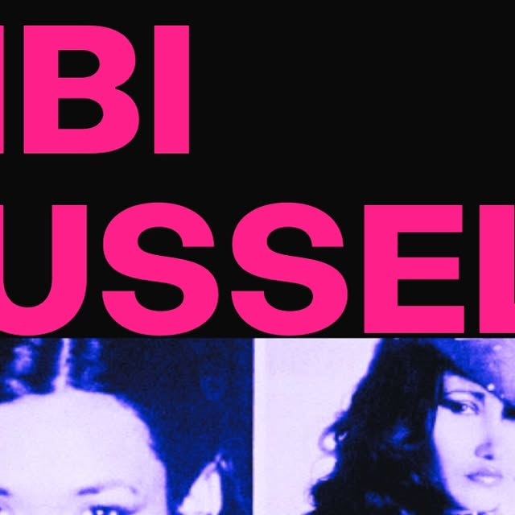
Bibi Russell: The Queen of Bangladesh's Fashion Industry বিবি রাসেল: বাংলাদেশের ফ্যাশন ডিজাইন জগতের রানি -
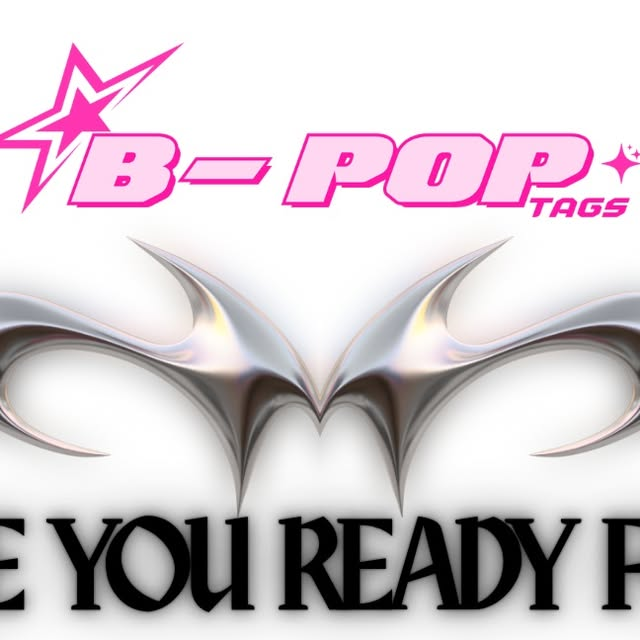
The Silent Rise of Cybersigilism in Bangladeshi Fashion বাংলাদেশি ফ্যাশনে সাইবারসিজিলিজমের নীরব উত্থান -
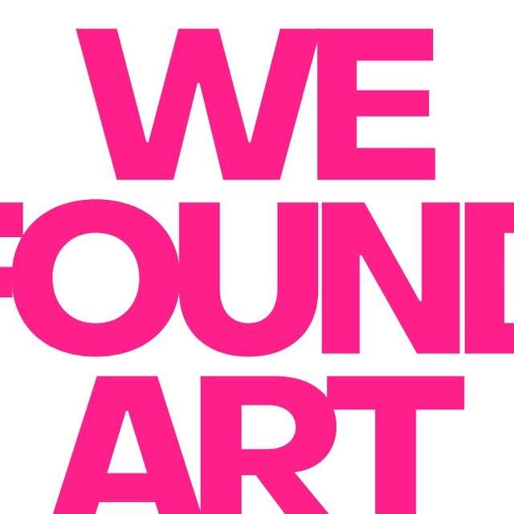
Rokte Joba: Anime Ontology and Bengali Post-Mysticism Rokte Joba: অ্যানিমে অন্টোলজি ও বাঙালি পোস্ট-মিস্টিসিজম
Pop Culture & Analog পপ কালচার
-
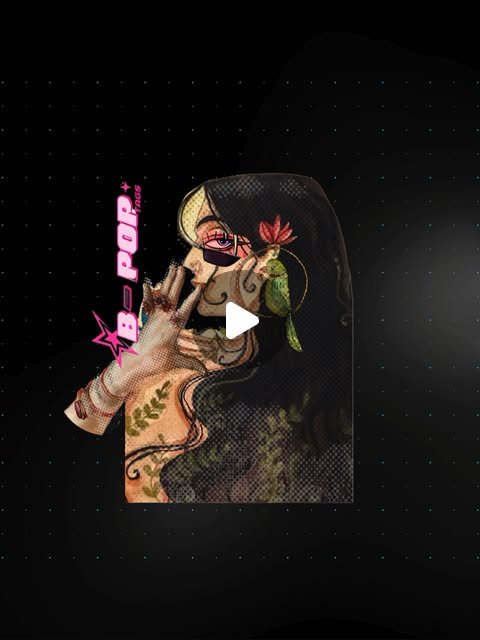
Physical Media Shops in Dhaka, Part 2 ঢাকার ফিজিক্যাল মিডিয়া শপ, পর্ব ২ -
 Physical Media Shops in Dhaka, Part 1
ঢাকার ফিজিক্যাল মিডিয়া শপ, পর্ব ১
Physical Media Shops in Dhaka, Part 1
ঢাকার ফিজিক্যাল মিডিয়া শপ, পর্ব ১
-
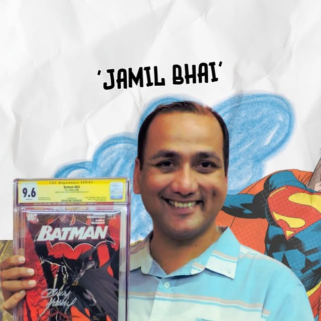
Jamil's Comics and Bangladesh's Comic Book Culture জামিল'স কমিকস ও বাংলাদেশের কমিক বই সংস্কৃতি -
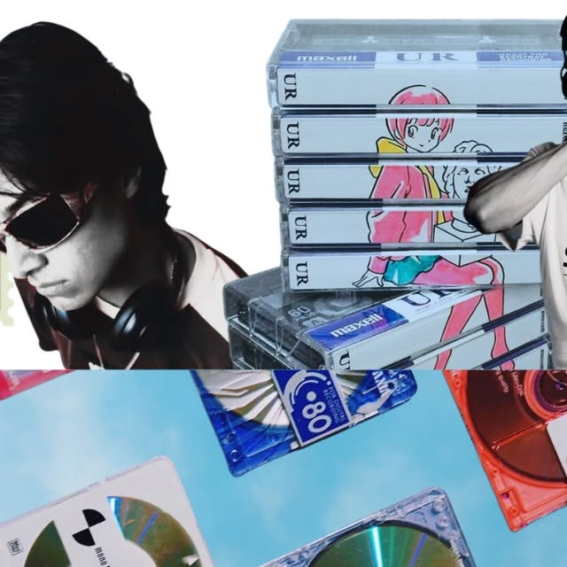
Dhaka's Vinyl and Cassette Revival ঢাকায় ফিরছে ভিনাইল আর ক্যাসেটের দিন -
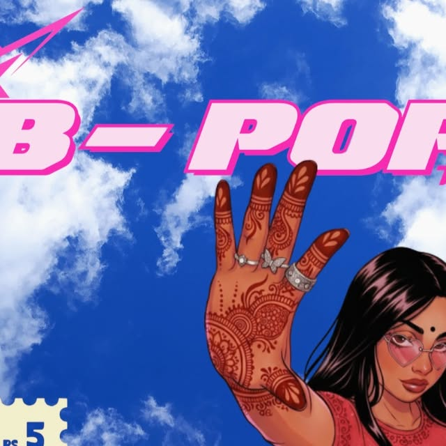
The Beginning: Why B-POP Tags Exists হইলো শুরু: বি-পপ ট্যাগসের যাত্রা
Events & Radar ইভেন্ট ও রাডার
-
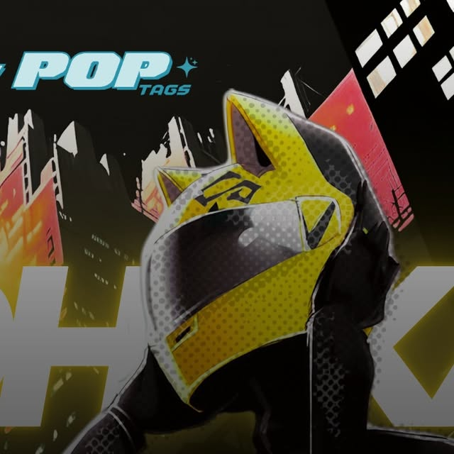
Which One Did We Miss? Dhaka Scene Roundup, 23 October 2026 কোনটা আমরা মিস করলাম? ঢাকা সিন রাউন্ডআপ, ২৩ অক্টোবর ২০২৬ -
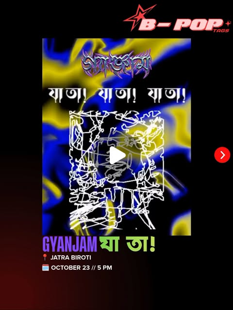
Dhaka Collectives to Watch: Upcoming Events, October 2026 নজরে রাখার মতো ঢাকার কালেকটিভ: অক্টোবর ২০২৬-এর আসন্ন ইভেন্ট -
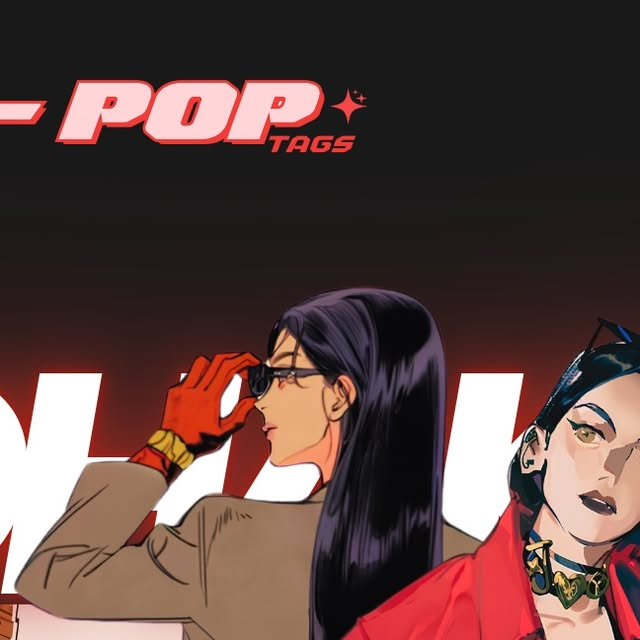
Which One Did You Miss? Dhaka Scene Roundup, 6 October 2026 কোনটা মিস করলেন? ঢাকা সিন রাউন্ডআপ, ৬ অক্টোবর ২০২৬ -
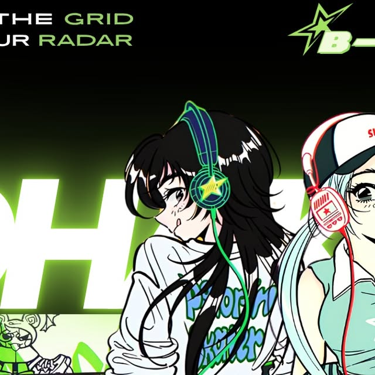
Off the Grid, On Our Radar: Dhaka Events, October 2026 অফ দ্য গ্রিড, কিন্তু আমাদের রাডারে: ঢাকার ইভেন্ট, অক্টোবর ২০২৬ -
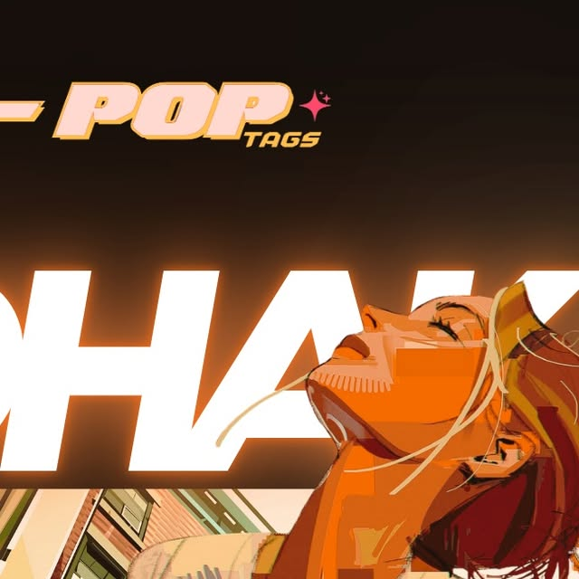
Which One Did You Miss? Dhaka Scene Roundup, 22 September 2026 কোনটা মিস করলেন? ঢাকা সিন রাউন্ডআপ, ২২ সেপ্টেম্বর ২০২৬ -
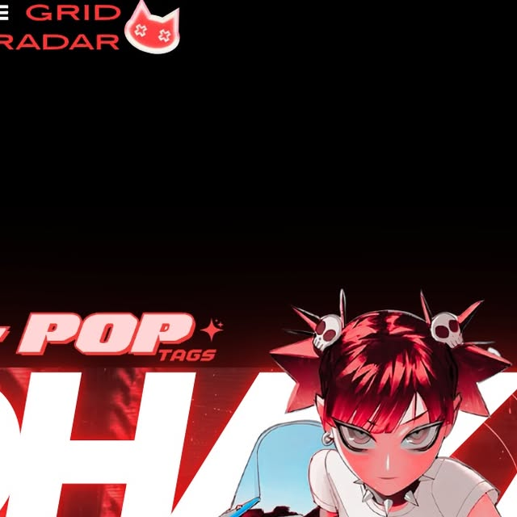
Dhaka Events to Save: September 2026 সেভ করে রাখুন: সেপ্টেম্বর ২০২৬-এ ঢাকার ইভেন্ট -
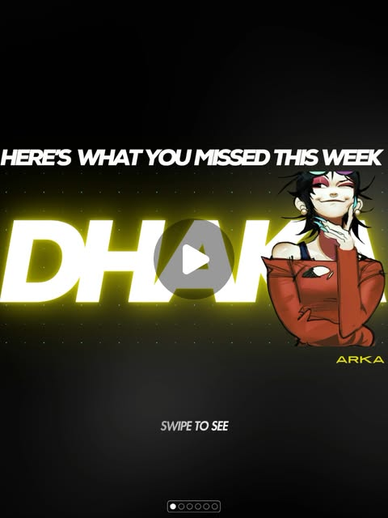
Which One Did You Miss? Dhaka Scene Roundup, 9 September 2026 এ সপ্তাহে কী মিস করলেন? ঢাকা সিন রাউন্ডআপ, ৯ সেপ্টেম্বর ২০২৬ -
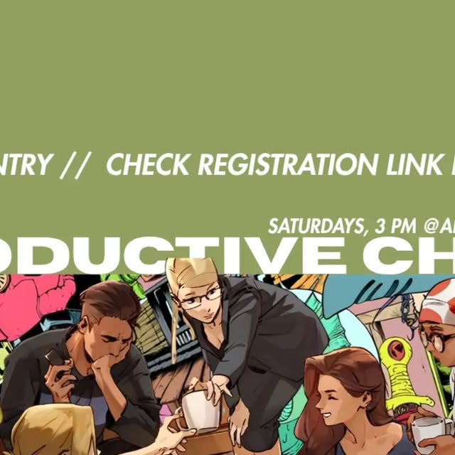
Productive Chill: Networking for People Who Don't Like Networking প্রোডাক্টিভ চিল: যাঁরা নেটওয়ার্কিং পছন্দ করেন না, তাঁদের জন্য নেটওয়ার্কিং -
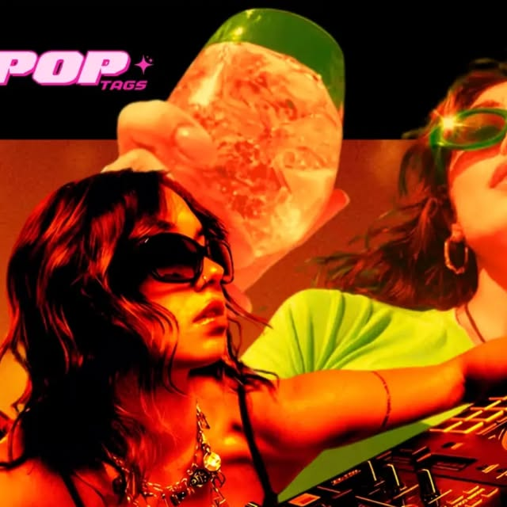
Cox's Bazar Festival, 29-30 January 2027: Tier 2 Passes কক্সবাজারে ২৯–৩০ জানুয়ারি ২০২৭: টিয়ার ২ পাস বিক্রি চলছে -
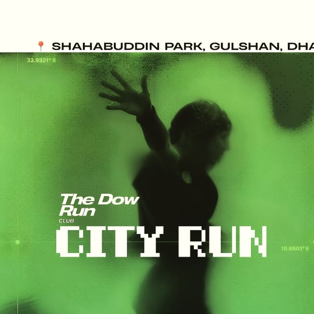
Dow Run Club 5K Community Run in Gulshan গুলশানে ডাউ রান ক্লাবের ৫ কিলোমিটার কমিউনিটি রান